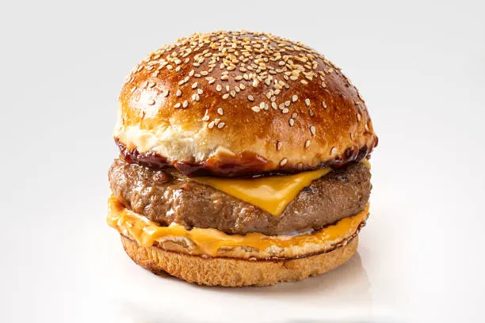

Burger Recipe

Home Page
Description
A burger is a popular sandwich consisting of a cooked patty, usually made from beef, chicken, or vegetables, placed inside a sliced bun and topped with vegetables, cheese, and sauces. Burgers are loved worldwide as a quick and filling meal.
Ingredients
- Buns – soft sandwich buns, usually toasted.
- Patty – beef, chicken, or vegetable, seasoned and cooked.
- Lettuce – fresh leaves for crunch.
- Tomato – sliced thin.
- Onion – sliced rings.
- Cheese – optional, melted on patty.
- Ketchup / mustard / mayo – for flavor.
- Pickles – for tang (optional).
- Oil or butter – for cooking patty and toasting buns.
- Salt & pepper – to taste.
Steps
- Prepare patty – Season and cook the meat or veggie patty in a pan or grill until done.
- Toast buns – Lightly butter and toast the buns until golden.
- Assemble burger – Place lettuce on the bottom bun, add patty, cheese, tomato, onion, pickles, and sauces.
- Top & serve – Cover with top bun and serve hot.